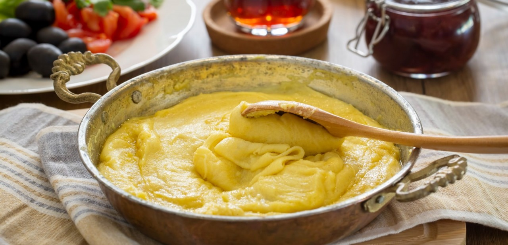

Muhlama
Rize muhlaması, Rize ve çevresinde yüzyıllardır bilinen yöresel bir lezzettir. Bu yemeğin yapımında ise yöre halkının kendine özgü tereyağı ve peyniri kullanılmaktadır. Rize'de birçok lokanta ve restoranlarda servis edilmektedir

2018 yılında, Rize Ticaret ve Sanayi Odası'nın Türk Patent ve Marka Kurumu'na coğrafi işaret tescili başvurusu sonucunda bu yemek Rize Muhlaması olarak 2021 yılında coğrafi işaretle tescillenmiştir.
Yapılan bir araştırmada, Ayder yaylasını ziyaret eden turistlerin ve bölgeye gelen ziyaretçilerin en çok tercih ettikleri yöresel yemeğin muhlama olduğu gözlemlenmiştir. Yapılan diğer bir araştırmaya göre ise Ankara’da en bilinen ve beğenilen Karadeniz yemeğinin muhlama olduğu sonucuna ulaşılmıştır
Tarif
Malzemeler
- 2 tepeleme yemek kaşığı tereyağ
- 2 tepeleme yemek kaşığı mısır unu
- 1, 5 su bardağından bir parmak fazla su
- 200 gr kolot veya çeçil peyniri
- Yarım çay kaşığı tuz
Yapılışı
- İlk olarak tavaya yağımızı alalım eritelim içine mısır ununu ilave edelim.
- İstediğimiz rengi alıncaya kadar kavuralım suyu yavaş yavaş ilave edelim çok azda tuz istediğimiz.
- Kıvama gelince yani yağı üzerine verince uzun uzun doğradığımız peyniri ilave edelim bu aşamada ocağın altını kısalım yavaş yavaş karıştıralım.
- Peynir eridikten sonra uzamaya başlayacaktır zaten sıcak olarak servis edelim.
.png)